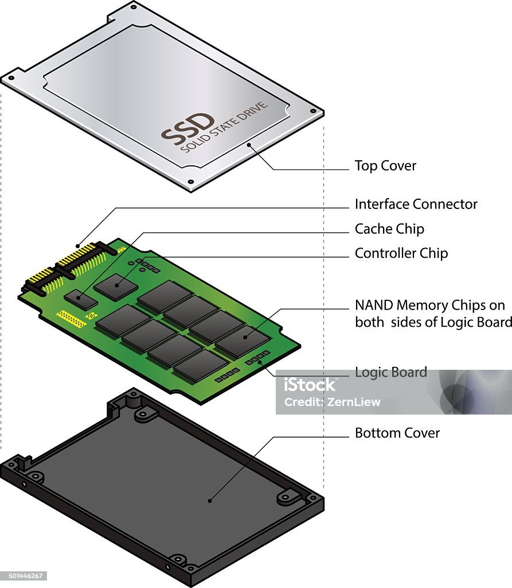
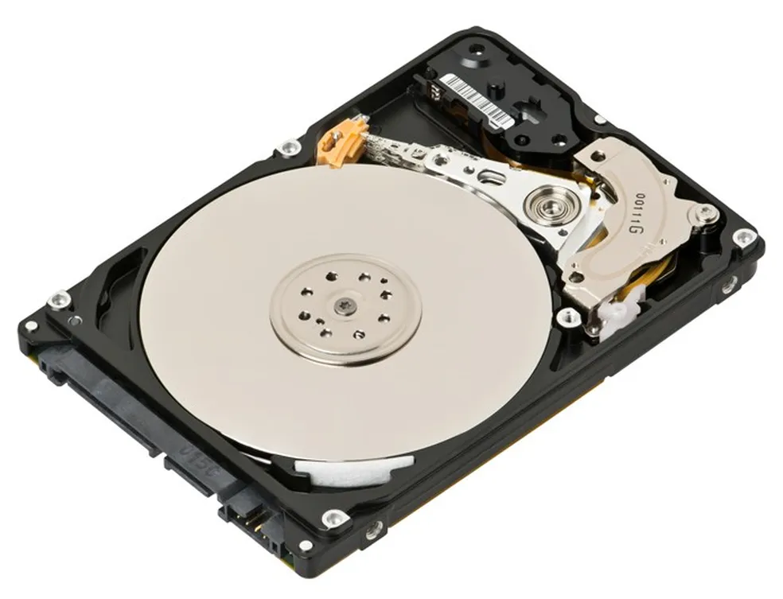
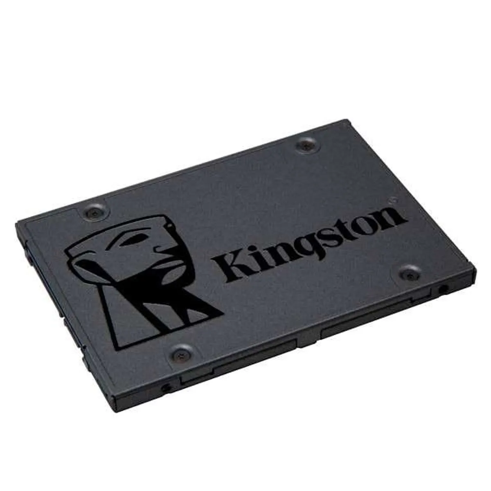

Memoria de Armazenamento
Elas são chamadas de “secundárias” porque não são acessadas diretamente pelo processador com a mesma velocidade da memória principal, que é a RAM. Quando um programa é aberto, os dados saem da memória secundária e são carregados para a RAM, onde o processador consegue trabalhar com eles de forma muito mais rápida.

Os exemplos mais comuns de memória secundária são o HD, o SSD, os pendrives, cartões de memória, CDs, DVDs e até armazenamento em rede. O HD, ou disco rígido, utiliza discos magnéticos giratórios e uma agulha de leitura para gravar e acessar dados. Ele possui grande capacidade de armazenamento, porém é mais lento por depender de partes mecânicas. Já o SSD utiliza memória flash eletrônica, sem partes móveis, oferecendo velocidades muito maiores, menor tempo de carregamento e mais resistência física.
A memória virtual é uma técnica utilizada pelo sistema operacional para aumentar a quantidade de memória disponível para os programas usando parte do armazenamento do computador, como o HD ou SSD, simulando memória RAM extra. Ela existe porque a memória RAM física possui um limite, e quando muitos programas estão abertos ao mesmo tempo, o sistema pode ficar sem espaço suficiente para armazenar todos os dados necessários.

Quando isso acontece, o sistema operacional move temporariamente parte dos dados menos utilizados da RAM para um arquivo especial no armazenamento, chamado arquivo de paginação ou swap. Assim, libera espaço na RAM para que os programas mais importantes continuem funcionando. Quando aqueles dados forem necessários novamente, eles retornam para a RAM. Esse processo acontece automaticamente e normalmente o usuário nem percebe diretamente.

A memória virtual permite que o computador execute programas que exigem mais memória do que a RAM física disponível. Por exemplo, um computador com 8 GB de RAM pode abrir aplicações que, juntas, ultrapassem esse valor porque parte dos dados será transferida para o SSD ou HD. Porém, apesar de aumentar a capacidade disponível, a memória virtual é muito mais lenta que a RAM real, já que dispositivos de armazenamento possuem tempos de acesso muito maiores.